|
|
News
Latest update – Monday 17 March 2014.
Articles in this section
- 17 March 2014
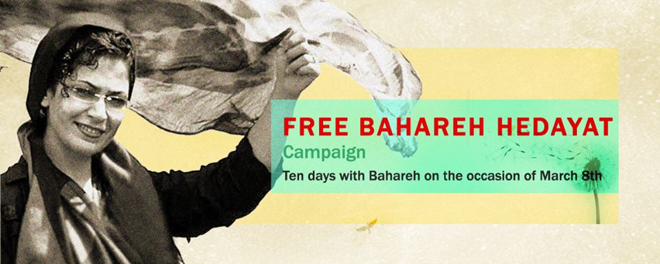
- 8 March 2014

Launch of Bahareh Hedayat Campaign with Tribute by Iranian Artist
- 8 March 2014
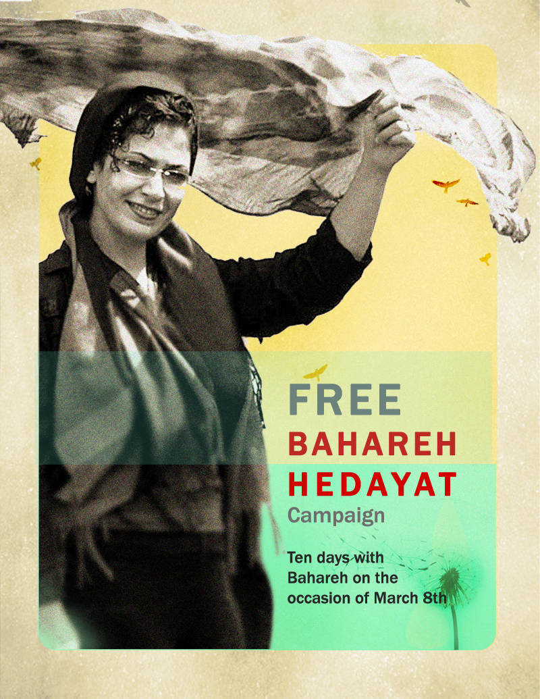
- 8 March 2014
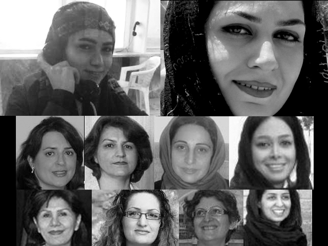
International Campaign for Human Rights in Iran, Issues Statement
- 12 July 2013

- 2 July 2013
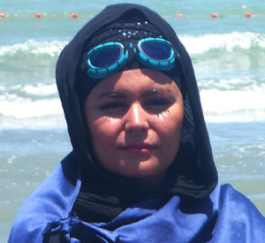
- 10 November 2012
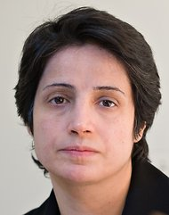
- 2 November 2012
- 28 October 2012
- 28 October 2012
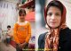
- 17 October 2012

- 17 October 2012
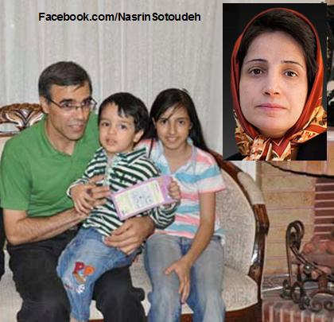
- 22 September 2012
- 15 September 2012
- 2 September 2012
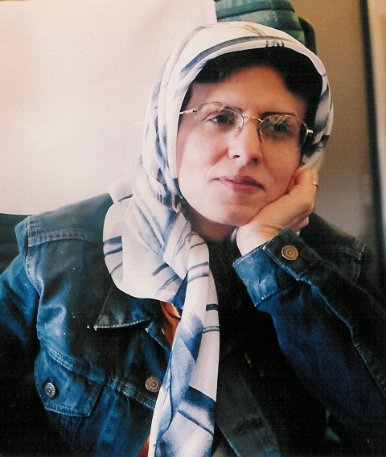
- 25 August 2012
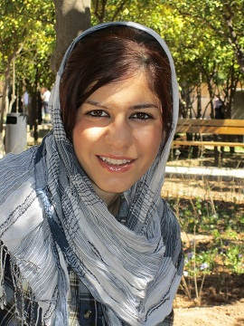
- 20 January 2012
- 20 January 2012
- 20 January 2012
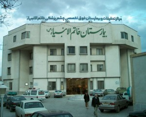
- 8 January 2012
- 7 January 2012
- 6 January 2012
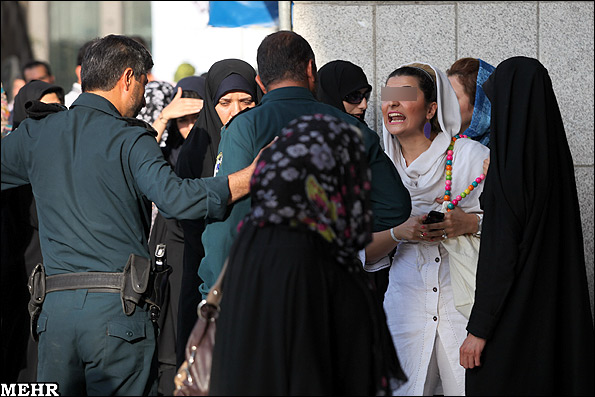
- 31 December 2011
- 31 December 2011
- 22 December 2011

- 8 November 2011

- 29 September 2011
- 25 September 2011

- 9 September 2011
- 9 September 2011
|